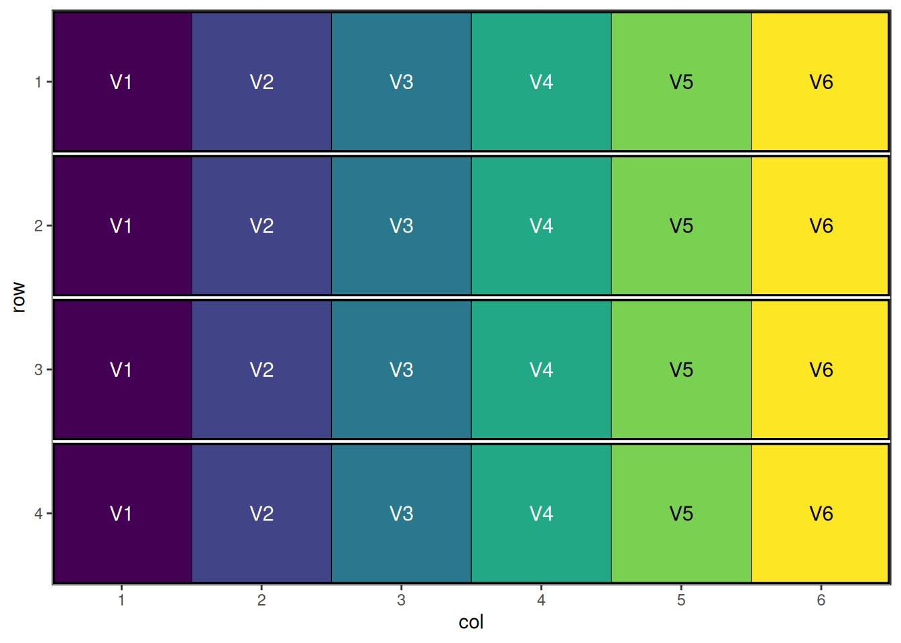
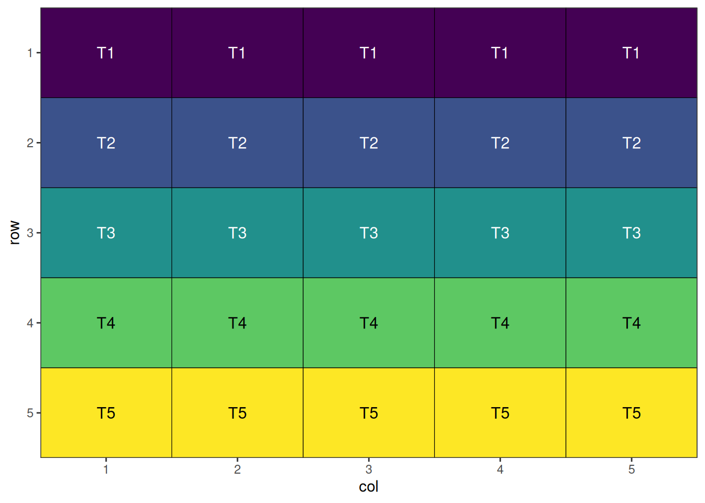

Introduction
Agricultural experiments require careful spatial design to minimise the effects of field heterogeneity and neighbour interactions while maximising statistical power. The speed package provides tools for creating spatially efficient experimental designs through simulated annealing optimisation.
This vignette demonstrates how to use speed for common agricultural experimental designs, showing how spatial optimisation can improve the efficiency and validity of field trials. We’ll work through four key design types, each building in complexity and showing different features of the package.
For advanced and specialised experimental designs (e.g., split-split plot, strip-plot, incomplete block, p-rep, and more), see the companion vignette: Complex Agricultural Experimental Designs with speed.
Completely Randomised Design (CRD)
Overview
The Completely Randomised Design is the simplest experimental design where treatments are assigned to experimental units entirely at random. While simple to implement, a CRD doesn’t account for spatial variation in field conditions, which can be mitigated by spatial optimisation techniques.
When to Use
- Homogeneous experimental conditions
- Controlled environments (greenhouse, growth chamber)
- Small-scale experiments with minimal spatial variation
- Proof-of-concept studies
Example: Field Trial with 8 Varieties
Consider a field trial testing 8 new wheat varieties with 4 replicates each. Even though treatments are assigned randomly, spatial optimisation can reduce neighbour effects and improve precision.
Setting Up CRD with speed
In agricultural contexts, even completely randomised designs benefit from spatial optimisation to minimise treatment clustering and neighbour effects. Firstly we will initialise a data frame representing the design and visualise it. This design has 4 replicates of 8 treatments or items, with 8 rows and 4 columns.
# Initialise data frame
crd_design <- initialise_design_df(items = 8, nrows = 8, ncols = 4)
head(crd_design) row col treatment
1 1 1 T1
2 2 1 T2
3 3 1 T3
4 4 1 T4
5 5 1 T5
6 6 1 T6
This is a systematic layout; note how the initial layout arranges treatments in a repeating, non-random pattern. This will now be randomised before visualisation.
Performing the Optimisation
The main speed() function performs the optimisation. It has been set up with sensible defaults to allow application to a wide variety of situations. In this case, we only need to provide the design data frame for it to operate on, the column name of the data frame to use for the treatments, and a seed for reproducibility.
crd_result <- speed(crd_design,
swap = "treatment",
seed = 42)row and col are used as row and column, respectively.Iteration: 1000 Score: 2.285714 Best: 2.285714 Since Improvement: 271
Iteration: 2000 Score: 2.285714 Best: 2.285714 Since Improvement: 1271
Early stopping at iteration 2729
crd_resultOptimised Experimental Design
----------------------------
Score: 2.285714
Iterations Run: 2730
Stopped Early: TRUE
Treatments: T1, T2, T3, T4, T5, T6, T7, T8
Seed: 42 Output of the Optimisation
The printed output from the returned design object shows the final optimisation score (lower is better), the number of iterations taken to reach that result, if the iterations stopped early due to lack of improvement, the treatments present in the design, and the seed. The output object contains some additional components, which can be seen below:
str(crd_result)List of 8
$ design_df :Classes 'design' and 'data.frame': 32 obs. of 3 variables:
..$ row : int [1:32] 1 1 1 1 2 2 2 2 3 3 ...
..$ col : int [1:32] 1 2 3 4 1 2 3 4 1 2 ...
..$ treatment: chr [1:32] "T8" "T1" "T7" "T3" ...
$ score : num 2.29
$ scores : num [1:2730] 40 36.3 32.4 28.3 24.1 ...
$ temperatures : num [1:2730] 100 99 98 97 96.1 ...
$ iterations_run: int 2730
$ stopped_early : logi TRUE
$ treatments : chr [1:8] "T1" "T2" "T3" "T4" ...
$ seed : num 42
- attr(*, "class")= chr [1:2] "design" "list"Visualise the Output
The final step is to visualise the optimised design. The plot below displays the spatial arrangement of treatments after optimisation, allowing you to easily check for clustering, spatial trends, or other patterns that may affect your experiment. A well-randomised and spatially efficient design will show treatments distributed evenly across the field, helping to minimise neighbour effects and maximise the reliability of your results.
autoplot(crd_result)
A nicely randomised1 and spatially optimal design!
Randomised Complete Block Design (RCBD)
Overview
RCBD is one of the most commonly used designs in agricultural research. It controls for one source of variation by grouping experimental units into homogeneous blocks, with each treatment appearing once per block.
When to Use
- Field experiments with known gradient (slope, soil type, irrigation)
- Medium to large experiments (3+ treatments)
- When blocking factor explains significant variation
- Multi-location trials
Example: Variety Trial Across Field Gradient
Consider testing 6 barley varieties across a field with a moisture gradient. Using 4 blocks perpendicular to the gradient helps control for soil moisture variation.
Setting Up RCBD with speed
Here we initialise a data frame for a design with 4 blocks and 6 treatments, arranged in 4 rows and 6 columns. Note that we can specify treatments in the items argument.
rcbd_design <- initialise_design_df(items = paste0("V", 1:6), nrows = 4, ncols = 6, block_nrows = 1, block_ncols = 6)
head(rcbd_design) row col treatment row_block col_block block
1 1 1 V1 1 1 1
2 2 1 V2 2 1 2
3 3 1 V3 3 1 3
4 4 1 V4 4 1 4
5 1 2 V5 1 1 1
6 2 2 V6 2 1 2
This is a systematic block layout; each block contains all treatments in a repeating pattern. This will now be randomised within blocks.
Performing the Optimisation
rcbd_result <- speed(rcbd_design,
swap = "treatment",
swap_within = "block",
seed = 42)row and col are used as row and column, respectively.Iteration: 1000 Score: 1.6 Best: 1.6 Since Improvement: 672
Iteration: 2000 Score: 1.6 Best: 1.6 Since Improvement: 1672
Early stopping at iteration 2328
rcbd_resultOptimised Experimental Design
----------------------------
Score: 1.6
Iterations Run: 2329
Stopped Early: TRUE
Treatments: V1, V2, V3, V4, V5, V6
Seed: 42 Output of the Optimisation
str(rcbd_result)List of 8
$ design_df :Classes 'design' and 'data.frame': 24 obs. of 6 variables:
..$ row : int [1:24] 1 1 1 1 1 1 2 2 2 2 ...
..$ col : int [1:24] 1 2 3 4 5 6 1 2 3 4 ...
..$ treatment: chr [1:24] "V4" "V1" "V5" "V6" ...
..$ row_block: int [1:24] 1 1 1 1 1 1 2 2 2 2 ...
..$ col_block: int [1:24] 1 1 1 1 1 1 1 1 1 1 ...
..$ block : num [1:24] 1 1 1 1 1 1 2 2 2 2 ...
$ score : num 1.6
$ scores : num [1:2329] 34 29.6 25.2 21.6 18.4 16.2 13 12.2 8.6 10.4 ...
$ temperatures : num [1:2329] 100 99 98 97 96.1 ...
$ iterations_run: int 2329
$ stopped_early : logi TRUE
$ treatments : chr [1:6] "V1" "V2" "V3" "V4" ...
$ seed : num 42
- attr(*, "class")= chr [1:2] "design" "list"Visualise the Output
autoplot(rcbd_result)
A well-randomised and spatially efficient RCBD layout.
Latin Square Design
Overview
Latin Square Design controls for two sources of variation simultaneously by arranging treatments in a square grid where each treatment appears exactly once in each row and column.
When to Use
- Small to medium experiments (3-10 treatments)
- Two known sources of variation (e.g., row and column effects)
- Greenhouse bench experiments
- Field experiments with two-way gradients
Constraints
- Number of treatments must equal number of rows and columns
- Limited degrees of freedom for error
- Assumes no row × column interaction
Setting Up Latin Square with speed
Here we initialise a 5 × 5 Latin square with 5 treatments.
latin_square_design <- initialise_design_df(items = 5, nrows = 5, ncols = 5)
head(latin_square_design) row col treatment
1 1 1 T1
2 2 1 T2
3 3 1 T3
4 4 1 T4
5 5 1 T5
6 1 2 T1
This is a systematic Latin square layout; each treatment appears once per row and column. The design will now be randomised.
Performing the Optimisation
Because of the spatial optimisation algorithm built into speed, with default options and enough iterations, it should arrive at a Latin square design in cases where the number of rows, columns, treatments and replicates are all equal such as this.
latin_square_result <- speed(latin_square_design,
swap = "treatment",
seed = 42)row and col are used as row and column, respectively.Iteration: 1000 Score: 1 Best: 1 Since Improvement: 308
Early stopping at iteration 1040
latin_square_resultOptimised Experimental Design
----------------------------
Score: 0
Iterations Run: 1041
Stopped Early: TRUE
Treatments: T1, T2, T3, T4, T5
Seed: 42 Output of the Optimisation
Note that the final score of zero shows that the algorithm has found a perfect Latin Square solution.
str(latin_square_result)List of 8
$ design_df :Classes 'design' and 'data.frame': 25 obs. of 3 variables:
..$ row : int [1:25] 1 1 1 1 1 2 2 2 2 2 ...
..$ col : int [1:25] 1 2 3 4 5 1 2 3 4 5 ...
..$ treatment: chr [1:25] "T3" "T2" "T5" "T1" ...
$ score : num 0
$ scores : num [1:1041] 45 39 37 33.5 30.5 32.5 32 30.5 26.5 29 ...
$ temperatures : num [1:1041] 100 99 98 97 96.1 ...
$ iterations_run: int 1041
$ stopped_early : logi TRUE
$ treatments : chr [1:5] "T1" "T2" "T3" "T4" ...
$ seed : num 42
- attr(*, "class")= chr [1:2] "design" "list"Visualise the Output
autoplot(latin_square_result)A well-randomised and spatially efficient Latin square layout.
Split-Plot Design
Overview
Split-Plot Design is used when some treatments are easier to apply to large areas (whole plots) while others require smaller areas (sub-plots). This creates a hierarchical structure with different levels of precision. Split-Plot Designs are particularly useful in agricultural experiments where some factors are difficult or expensive to replicate at the whole plot level. These designs are possible with the speed package, allowing for spatial optimisation of both whole plots and sub-plots in a single step.
When to Use
- Treatments with different application scales (large vs small plots)
- Irrigation × variety experiments
- Tillage × fertiliser studies
- When some treatments are expensive or difficult to replicate
Structure
- Whole plots: Larger experimental units (main treatments)
- Sub-plots: Smaller units within whole plots (sub-treatments)
- Different error terms for different treatment levels
Setting Up Split Plot Design with speed
Now we can create a data frame representing a split plot design. Note that the initalise_design_df function does not currently support split plot designs directly, so we will create it manually.
split_plot_design <- data.frame(
row = rep(1:12, each = 4),
col = rep(1:4, times = 12),
block = rep(1:4, each = 12),
wholeplot = rep(1:12, each = 4),
wholeplot_treatment = rep(rep(LETTERS[1:3], each = 4), times = 4),
subplot_treatment = rep(letters[1:4], 12)
)
head(split_plot_design) row col block wholeplot wholeplot_treatment subplot_treatment
1 1 1 1 1 A a
2 1 2 1 1 A b
3 1 3 1 1 A c
4 1 4 1 1 A d
5 2 1 1 2 B a
6 2 2 1 2 B b
This is a systematic split plot layout; each treatment appears once per block for whole plot treatments, and once per whole plot for sub-plot treatments. The design will now be randomised.
Performing the Optimisation
For split-plot designs, we use named lists to specify the hierarchical structure. The swap parameter defines what to optimise at each level, while swap_within defines the constraints for each level.
split_plot_result <- speed(split_plot_design,
swap = list(wp = "wholeplot_treatment",
sp = "subplot_treatment"),
swap_within = list(wp = "block", sp = "wholeplot"),
seed = 42)row and col are used as row and column, respectively.Optimising level: wp
Level: wp Iteration: 1000 Score: 100 Best: 100 Since Improvement: 1000
Level: wp Iteration: 2000 Score: 100 Best: 100 Since Improvement: 2000
Early stopping at iteration 2000 for level wp
Optimising level: sp
Early stopping at iteration 570 for level sp
split_plot_resultOptimised Experimental Design
----------------------------
Score: 100
Iterations Run: 2572
Stopped Early: TRUE TRUE
Treatments:
wp: A, B, C
sp: a, b, c, d
Seed: 42 Output of the Optimisation
The output shows optimisation results for the design. The score and iterations are combined for the entire design, while the treatments, and stopping criteria are reported separately for each level, allowing you to assess the quality of optimisation at each hierarchy level.
str(split_plot_result)List of 8
$ design_df :Classes 'design' and 'data.frame': 48 obs. of 6 variables:
..$ row : int [1:48] 1 1 1 1 2 2 2 2 3 3 ...
..$ col : int [1:48] 1 2 3 4 1 2 3 4 1 2 ...
..$ block : int [1:48] 1 1 1 1 1 1 1 1 1 1 ...
..$ wholeplot : int [1:48] 1 1 1 1 2 2 2 2 3 3 ...
..$ wholeplot_treatment: chr [1:48] "C" "C" "C" "C" ...
..$ subplot_treatment : chr [1:48] "a" "b" "c" "d" ...
$ score : num 100
$ scores :List of 2
..$ wp: num [1:2001] 100 104 104 104 104 104 104 104 100 100 ...
..$ sp: num [1:571] 188 169 151 133 125 ...
$ temperatures :List of 2
..$ wp: num [1:2001] 100 99 98 97 96.1 ...
..$ sp: num [1:571] 100 99 98 97 96.1 ...
$ iterations_run: num 2572
$ stopped_early : Named logi [1:2] TRUE TRUE
..- attr(*, "names")= chr [1:2] "wp" "sp"
$ treatments :List of 2
..$ wp: chr [1:3] "A" "B" "C"
..$ sp: chr [1:4] "a" "b" "c" "d"
$ seed : num 42
- attr(*, "class")= chr [1:2] "design" "list"Visualise the Output
autoplot(split_plot_result, treatments = "wholeplot_treatment")
autoplot(split_plot_result, treatments = "subplot_treatment", block = "wholeplot")This design has now been optimised at both the whole plot level and the sub-plot level.
Spatial Design Considerations
Field Shape and Orientation
The shape and orientation of your experimental field significantly impacts design efficiency:
- Long, narrow fields: Favour designs with blocks perpendicular to the long axis
- Square fields: Allow more flexibility in blocking direction
- Irregular shapes: May require custom design approaches
Neighbour Effects
Agricultural experiments often experience neighbour effects where adjacent plots influence each other:
- Competition effects: Tall varieties shading short ones
- Contamination: Fertiliser or pesticide drift
- Root competition: Nutrient or water competition between plots
The speed package specifically addresses these issues through spatial optimisation.
Buffer Areas
Consider including buffer areas or border plots to:
- Reduce edge effects
- minimise contamination between treatments
- Provide realistic growing conditions
Using speed Effectively
- Set appropriate parameters: Balance optimisation time with improvement
- Visualise designs: Always plot layouts before implementation
- Compare alternatives: Test multiple blocking strategies
- Validate results: Check constraint satisfaction and efficiency metrics
Conclusion
The speed package provides powerful tools for creating spatially efficient experimental designs. By optimising treatment arrangements, researchers can:
- Reduce neighbour effects and spatial confounding
- Improve statistical power and precision
- Maintain design validity and balance
- Visualise and evaluate design quality
Whether using simple randomised designs or complex split-plot structures, spatial optimisation through speed can significantly enhance the efficiency and reliability of agricultural experiments.
Further Reading
- Montgomery, D.C. (2017). Design and Analysis of Experiments
- Mead, R. (1988). The Design of Experiments
- John, J.A. & Williams, E.R. (1995). Cyclic and Computer Generated Designs
- Bailey, R.A. (2008). Design of Comparative Experiments
This vignette demonstrates the versatility of the speed package for agricultural experimental design. For more advanced applications and custom designs, consult the package documentation and additional vignettes.
Related Vignettes
- Complex Agricultural Experimental Designs with speed: Advanced and specialised designs, including split-split plot, strip-plot, incomplete block, p-rep, and more.